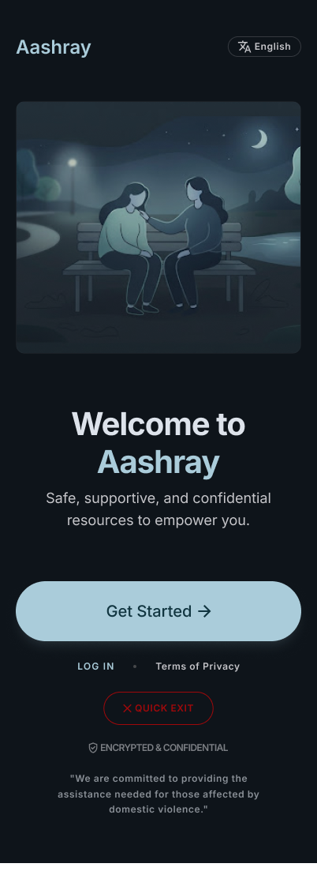
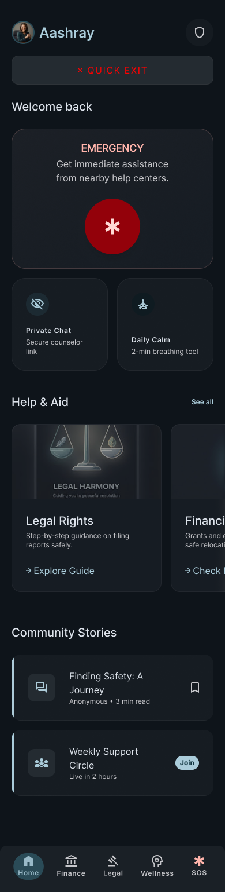
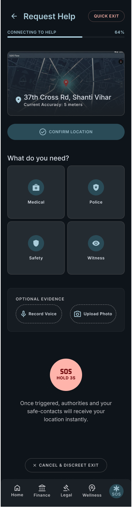
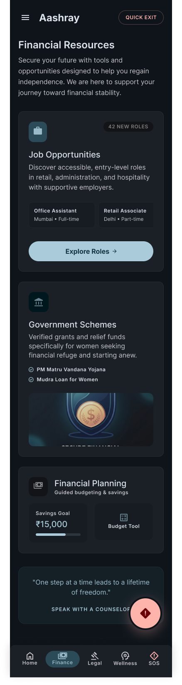
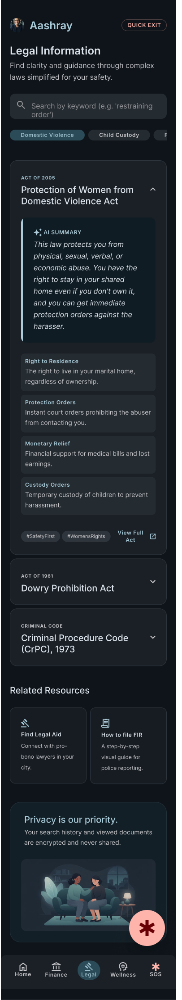
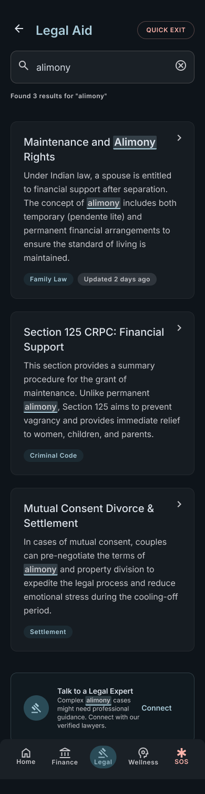
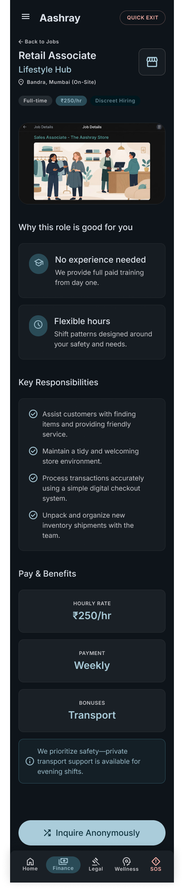
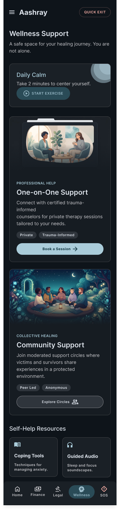

A discreet safety app designed around why victims of domestic violence, stay - not just when they leave. Shelter maps, legal aid, financial assistance, and SOS in one place for domestic violence survivors.

Welcome & onboarding

Home dashboard

SOS: hold 3s, silent alert

Financial resources
Domestic violence apps in India fall into two camps: pure SOS tools, or information directories. None combined the full ecosystem of support a survivor actually needs: shelter, legal help, financial independence, and emergency response, in one discreet interface.
The deeper insight from research: most survivors don't leave immediately. They stay for financial reasons, for their children, out of fear. Any effective tool has to meet them where they are, not where we assume they should be.
↓ Aashray combines all four, discreetly
Research drew on published studies, NGO reports, survivor testimonials (secondary sources), and interviews with social workers. The goal: understand the why behind staying, not just the what of leaving.
86% of survivors cite financial dependence as the primary reason for not leaving. Most existing apps don't address this at all.
Most victims don't know their rights under the Protection of Women from DV Act. Free legal aid exists but is near-impossible to discover.
Shelter info is scattered across government portals and NGO websites. No single discoverable map exists.
Survivors fear their abuser finding the app. Discretion, including quick exit and disguise mode, is a safety feature, not a nice-to-have.
Each support type needed its own depth without the app feeling like four apps stitched together. The IA had to make every category reachable from the home screen in a single tap.
"The most critical design decision was the Quick Exit feature: one tap closes the app and clears history. This isn't a feature; it's a trust signal."
Home: 4 support types, 2 taps away

Legal information: DV Act simplified

Legal search: alimony rights
Financial resources: govt schemes

Discreet employment listings

Wellness & counselling
SOS: silent, no trace left
Deep navy + warm terracotta, authoritative but not clinical. Darkness provides psychological privacy on a shared device.
Any critical action (SOS, Quick Exit, shelter map) reachable within 2 taps from any screen. Validated against one-handed use.
App can appear as "Grocery List" or "Calculator" on the home screen. No logo or name visible externally.
Emergency alert queues for when connectivity returns, critical in scenarios where connectivity is lowest.
Verified through a competitive audit of 12 existing apps, none combined all four support types, and validated with social workers and students in usability testing.
What I would measure if shipped: Shelter booking initiations per week, legal consultation connections, Quick Exit usage (sign of real-world safety context), and return visits (signal of trust).
What I learned: Safety design demands you design for the worst moment, not the average moment. Every micro-interaction carries weight when the stakes are this high.
Questions about this project? Ask away.